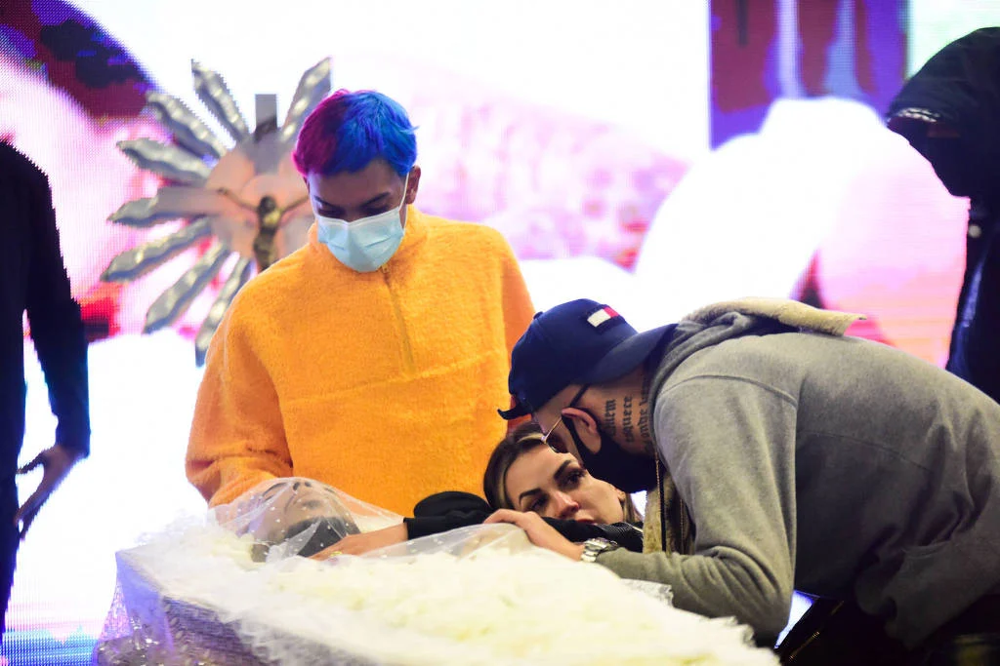

conhecido artisticamente como MC Kevin, foi um cantor e compositor brasileiro. Cria da Vila Ede, na Zona Norte de São Paulo, desde 2013 Kevin Nascimento Bueno estava no meio musical. Antes de partir pra carreira como MC, Kevin sonhava em ser jogador de futebol e até chegou a jogar pelo Santos no time de Fut7 e fez uma tatuagem em homenagem ao ídolo Neymar.
Recentemente “Passado & Presente” foi eleito o melhor do ano pelo público que votou no Prêmio Sobre Funk 2021. A vitória veio com mais de 80% dos votos. O troféu será entregue para a família do artista como forma de homenagem pelo trabalho feito por pelo funkeiro
Kevin morreu aos 23 anos, após cair do quinto andar do Hotel Brisa Barra, onde estava hospedado, na Avenida Lúcio Costa, na Barra da Tijuca, Rio de Janeiro, em 16 de maio de 2021
